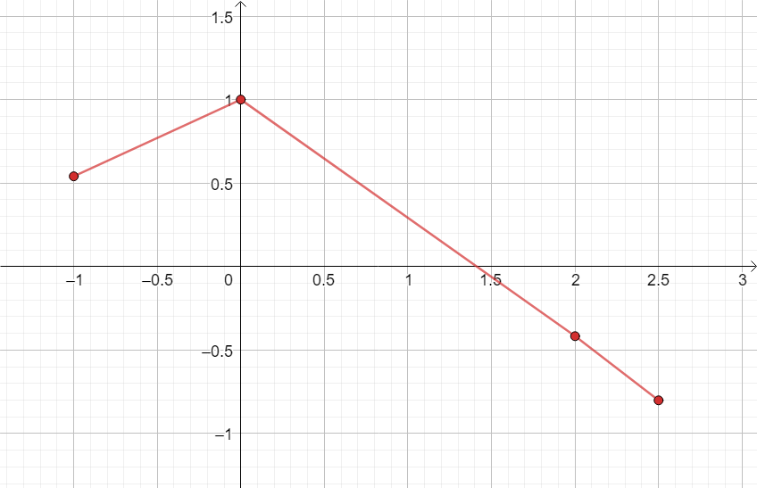
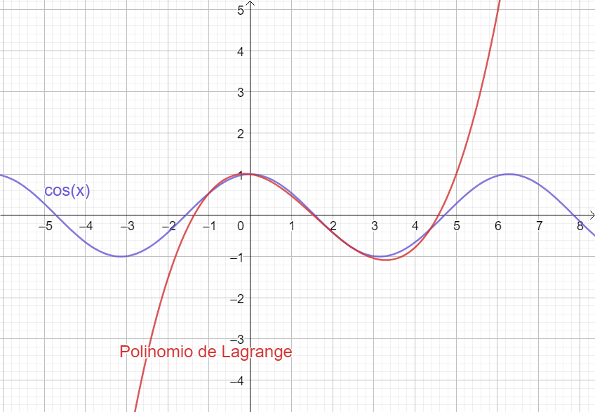
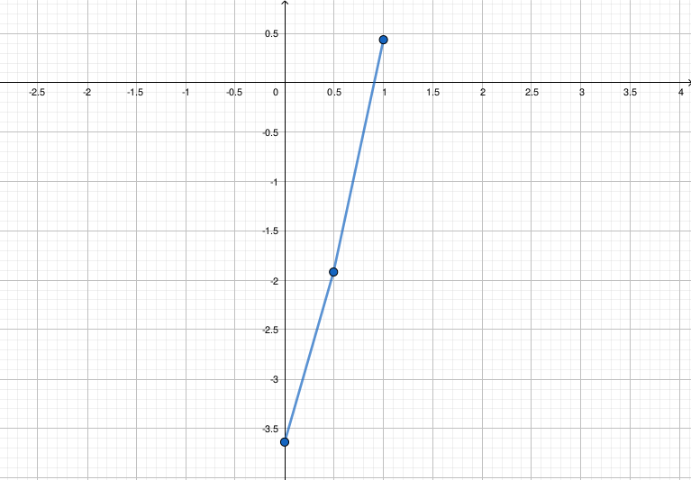

5 Interpolación de Lagrange
- Lagrange propuso reescribir la recta anterior como:
\[ f(x) = \frac{x - x_1}{x_0 - x_1} y_0 + \frac{x - x_0}{x_1 - x_0} y_1 \]
- Esta es expresión que se puede extender para obtener polinomios de grados superiores que pasen por más puntos.
- Por ejemplo, para hallar el polinomio que pasa por los puntos \((x_0, y_0)\), \((x_1, y_1)\) y \((x_2, y_2)\):
\[ f(x) = \frac{(x - x_1)(x - x_2)}{(x_0 - x_1)(x_0 - x_2)} y_0 + \frac{(x - x_0)(x - x_2)}{(x_1 - x_0)(x_1 - x_2)} y_1 + \frac{(x - x_0)(x - x_1)}{(x_2 - x_0)(x_2 - x_1)} y_2 \]
Se puede ver fácilmente que este polinomio pasa exactamente por los tres puntos dados.
De la misma forma, el polinomio de grado 3 que pasa por cuatro puntos \((x_0, y_0)\), \((x_1, y_1)\), \((x_2, y_2)\) y \((x_3, y_3)\) es:
\[ \hspace{-0.5cm} \begin{split} f(x) = &~ \frac{(x - x_1)(x - x_2)(x - x_3)}{(x_0 - x_1)(x_0 - x_2)(x_0 - x_3)} y_0 + \frac{(x - x_0)(x - x_2)(x - x_3)}{(x_1 - x_0)(x_1 - x_2)(x_1 - x_3)} y_1 \\ & + \frac{(x - x_0)(x - x_1)(x - x_3)}{(x_2 - x_0)(x_2 - x_1)(x_2 - x_3)} y_2 + \frac{(x - x_0)(x - x_1)(x - x_2)}{(x_3 - x_0)(x_3 - x_1)(x_3 - x_2)} y_3 \end{split} \]
Se puede ver fácilmente que este polinomio pasa exactamente por los cuatro puntos dados.
Generalizando, la fórmula de interpolación de Lagrange para construir un polinomio de grado \(n\) que pase por \(n+1\) puntos \((x_0, y_0), (x_1, y_1), \cdots, (x_n, y_n)\) es:
\[ y = f(x) = \sum_{i = 0}^n \frac{\prod\limits_{\substack{j = 0\\ j \neq i}}^n (x - x_j)}{\prod\limits_{\substack{j = 0\\ j \neq i}}^n (x_i - x_j)} y_i \]
Comparación con el método de Newton
Ventaja: no requiere que los valores tabulados de \(x\) estén equiespaciados. Si lo están, ambos métodos coinciden.
Desventaja:
- En ocasiones es útil considerar varios polinomios interpoladores de distinto grado para luego elegir el más adecuado.
- Con el método de Newton esto es muy sencillo, ya que como vimos se pueden construir recursivamente (por ejemplo, el de grado 3 es igual al de grado 2 más un término extra).
- En cambio, con el método de Lagrange no hay relación entre la construcción de \(P_{n-1}(x)\) y la de \(P_n(x)\); cada polinomio debe construirse individualmente realizando todos los cálculos otra vez.
- Esto implica que este método sea menos eficiente al tener que recalcular todo el polinomio si varía el número de puntos.
Ejemplo 5. Emplear el método de Lagrange para interpolar el valor de la función \(f\) en \(x=2.25\), con el polinomio interpolador de grado 3 que pasa por los cuatro puntos tabulados:
| \(x_k\) | \(y_k\) |
|---|---|
| -1 | 0,5403 |
| 0 | 1,0000 |
| 2 | -0,4162 |
| 2.5 | -0,8011 |

Ejemplo 5
\[ \begin{split} f(x) &= \sum_{i = 0}^3 \frac{\prod\limits_{\substack{j = 0\\ j \neq i}}^3 (x - x_j)}{\prod\limits_{\substack{j = 0\\ j \neq i}}^3 (x_i - x_j)} y_i \\ \\ &= \frac{(x - x_1)(x - x_2)(x - x_3)}{(x_0 - x_1)(x_0 - x_2)(x_0 - x_3)} y_0 + \frac{(x - x_0)(x - x_2)(x - x_3)}{(x_1 - x_0)(x_1 - x_2)(x_1 - x_3)} y_1 \\ &~ + \frac{(x - x_0)(x - x_1)(x - x_3)}{(x_2 - x_0)(x_2 - x_1)(x_2 - x_3)} y_2 + \frac{(x - x_0)(x - x_1)(x - x_2)}{(x_3 - x_0)(x_3 - x_1)(x_3 - x_2)} y_3 \\ \\ \implies y = f(2.25) &\approx \frac{(2.25 - 0)(2.25 - 2)(2.25 - 2.5)}{(-1-0)(-1-2)(-1-2.5)} 0.5403 + \frac{(2.25 +1)(2.25 - 2)(2.25 - 2.5)}{(0+1)(0-2)(0-2.5)} 1.0000 \\ &~ + \frac{(2.25 +1)(2.25 - 0)(2.25 - 2.5)}{(2+1)(2-0)(2-2.5)} (-0.4162) + \frac{(2.25 +1)(2.25 - 0)(2.25 - 2)}{(2.5+1)(2.5-0)(2.5-2)} (-0.8011) \\ &= -0.6218 \\ \\ &\therefore f(2.25) \approx -0.6218 \end{split} \]
Ejemplo 5. Si en la fórmula anterior en lugar de reemplazar \(x\) por un valor particular (en este caso, \(2.5\)) operamos y reacomodamos los términos, podemos hallar la expresión del polinomio interpolador:
\[ f(x) = 0.1042 x^3 -0.4934 x^2 -0.1379 x+1 \]

Ejemplo 5. La función que generó los valores tabulados es \(cos(x)\):
En el rango tabulado:

Un poco más lejos:

- Siendo \(cos(2.25) = -0.6282\), el error relativo de la aproximación fue \(|-0.6282-0.6218| / |-0.6285| = 1.02\%\)
Interpolación inversa
- El problema de interpolación consiste en determinar el valor de la función desconocida \(f(x)\) a partir de un valor conocido de \(x\).
- En la interpolación inversa se resuelve el problema contrario: determinar el valor de \(x\) conociendo el de \(f(x)\).
- Podemos implementar interpolación inversa con el método de Lagrange intercambiando el rol de las columnas tabuladas \(x\) e \(y\), pero sólo para rangos tabulados donde la función \(f\) es monótona.
Ejemplo 6. Con los datos del Ejemplo 1, ¿cuál es el valor de \(x\) tal que \(f(x)=-0.75\)?
| \(x_k\) | \(y_k\) |
|---|---|
| -1 | 0,5403 |
| 0 | 1,0000 |
| 2 | -0,4162 |
| 2.5 | -0,8011 |
\(\downarrow\)
| \(x_k\) | \(y_k\) |
|---|---|
| 1,0000 | 0 |
| -0,4162 | 2 |
| -0,8011 | 2.5 |
\[ \begin{split} f(x) &= \sum_{i = 0}^2 \frac{\prod\limits_{\substack{j = 0\\ j \neq i}}^2 (x - x_j)}{\prod\limits_{\substack{j = 0\\ j \neq i}}^2 (x_i - x_j)} y_i \\ \\ &= \frac{(x - x_1)(x - x_2)}{(x_0 - x_1)(x_0 - x_2)} y_0 + \frac{(x - x_0)(x - x_2)}{(x_1 - x_0)(x_1 - x_2)} y_1 + \frac{(x - x_0)(x - x_1)}{(x_2 - x_0)(x_2 - x_1)} y_2 \\ \\ \implies f(-0.75) &\approx \frac{(-0.75+0.4162)(-0.75+0.8011)}{(1+0.4162)(1+0.8011)} 0 \\ &~ + \frac{(-0.75-1)(-0.75+0.8011)}{(-0.4162-1)(-0.4162+0.8011)} 2 \\ &~ + \frac{(-0.75-1)(-0.75+0.4162)}{(-0.8011-1)(-0.8011+0.4162)} 2.5 \\ &= 2.4347 \end{split} \] \(\therefore\) el valor de \(x\) tal que \(f(x)=-0.75\) es \(x \approx 2.4347\).
Interpolación inversa. Podemos usar la interpolación inversa para resolver ecuaciones.
Ejemplo 7: hallar una raiz positiva para la ecuación \(f(x)=x-4\sin(x+2) = 0\).
- Tabulamos algunos valores y graficamos:
| \(x_k\) | \(y_k\) |
|---|---|
| 0 | -3.6372 |
| 0.5 | -1.8939 |
| 1 | 0.4355 |

Ejemplo 7
- Podemos usar los dos últimos puntos donde vemos que la función cortó a las abscisas y hacer una interpolación lineal, los tres puntos y tener una interpolación cuadrática, o incluso agregar más puntos.
| \(x_k\) | \(y_k\) |
|---|---|
| 0 | -3.6372 |
| 0.5 | -1.8939 |
| 1 | 0.4355 |
\(\downarrow\)
| \(x_k\) | \(y_k\) |
|---|---|
| -3.6372 | 0 |
\[ \begin{split} y = f(x) &= \frac{x - x_1}{x_0 - x_1} y_0 + \frac{x - x_0}{x_1 - x_0} y_1 \\ \\ \implies f(0) &\approx \frac{0-0.4355}{-1.8939-0.4355} 0.5 + \frac{0+1.8939}{0.4355+1.8939} 1 \\ \\ &= 0.9065 \\ \end{split} \] \(\therefore\) La solución positiva de la ecuación es \(x \approx 0.9065\) ya que \(f(0.9065) \approx 0\).
5.1 Observaciones finales
- Un polinomio de grado \(n\) ajustado a \(n+1\) puntos es único.
- El polinomio de interpolación se puede expresar en varias formas distintas, pero todas son equivalentes por el punto anterior.
- Si una función se aproxima mediante un polinomio de interpolación, no hay garantía de que dicho polinomio converja a la función exacta al aumentar el número de datos. En general, la interpolación mediante un polinomio de orden grande debe evitarse o utilizarse con precauciones extremas.
- Aunque no existe un criterio para determinar el orden óptimo del polinomio de interpolación, generalmente se recomienda utilizar uno con orden relativamente bajo en un pequeño rango de \(x\).